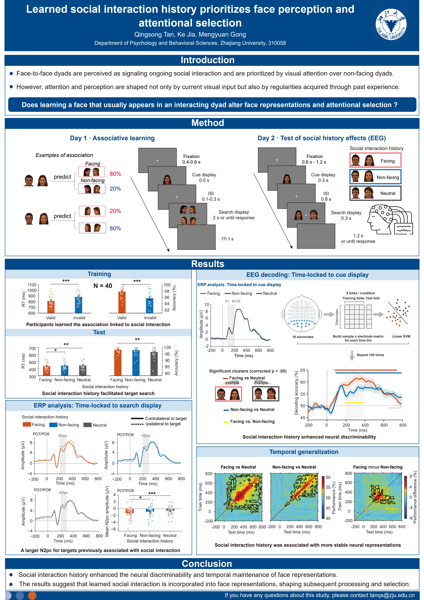
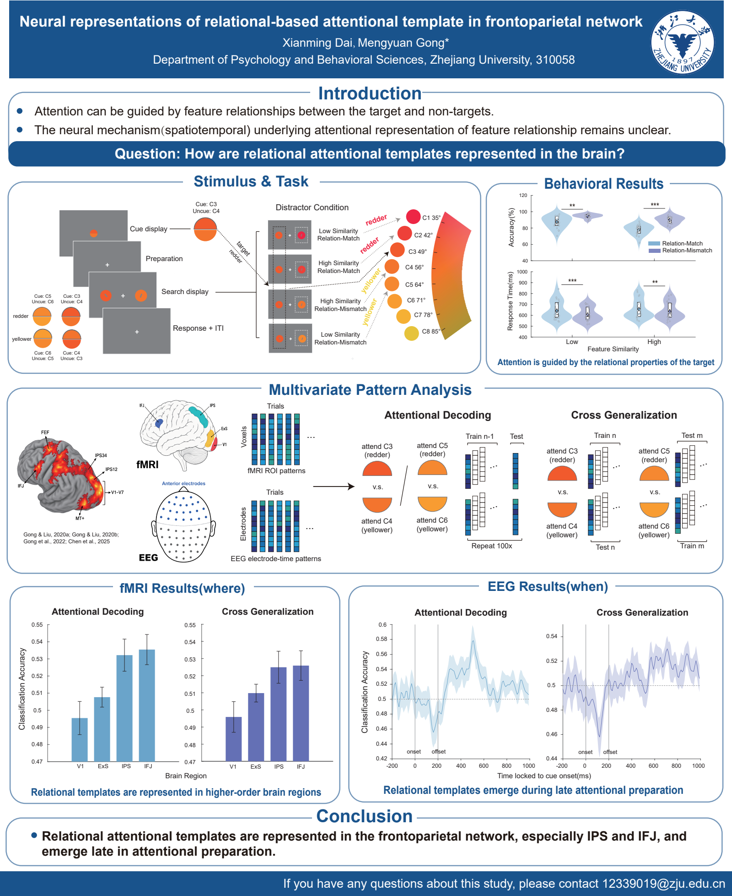
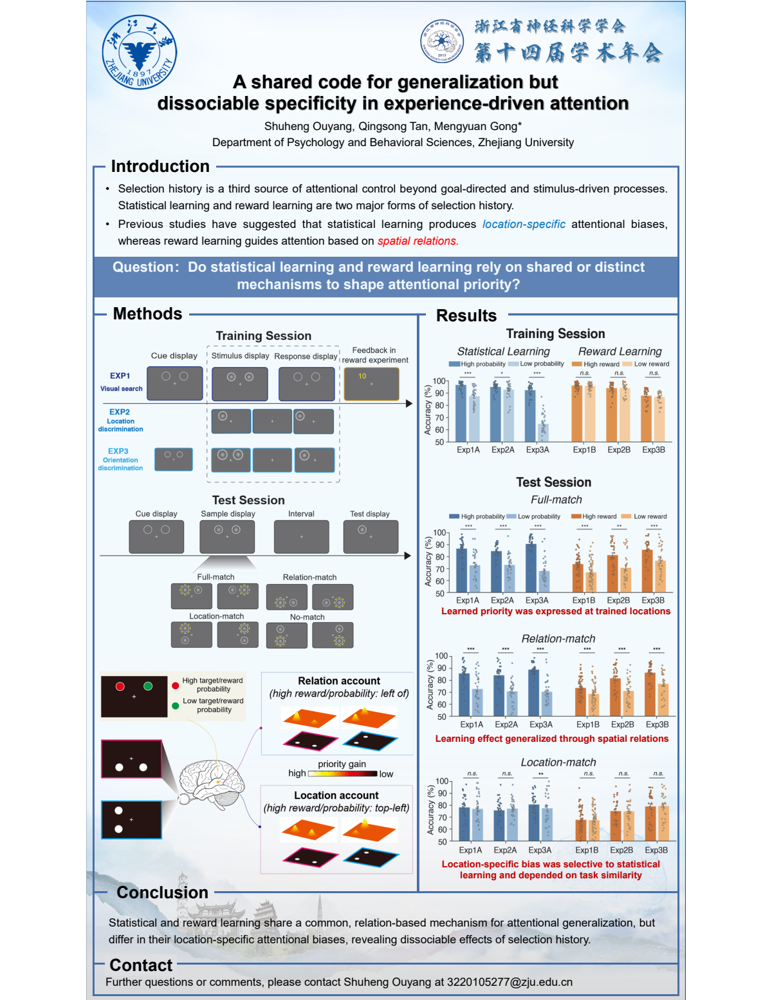
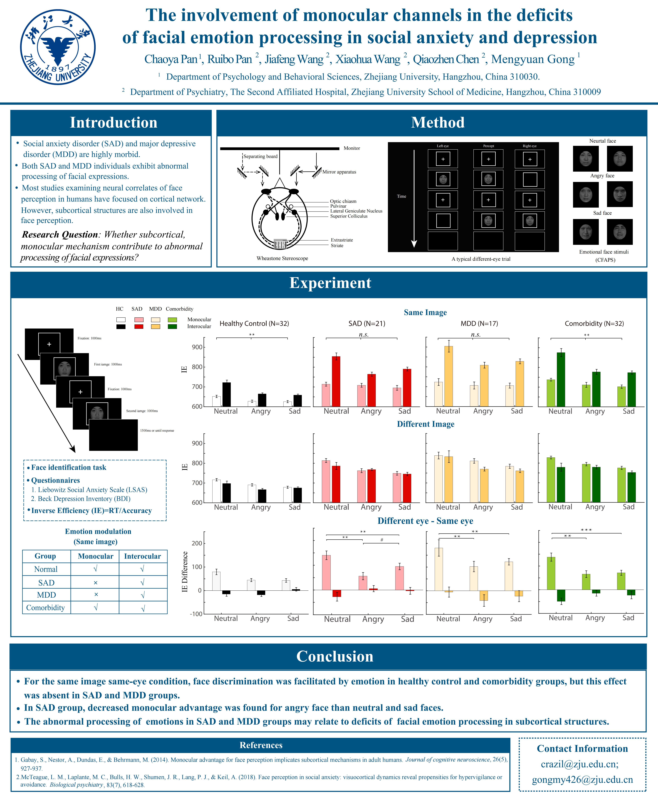
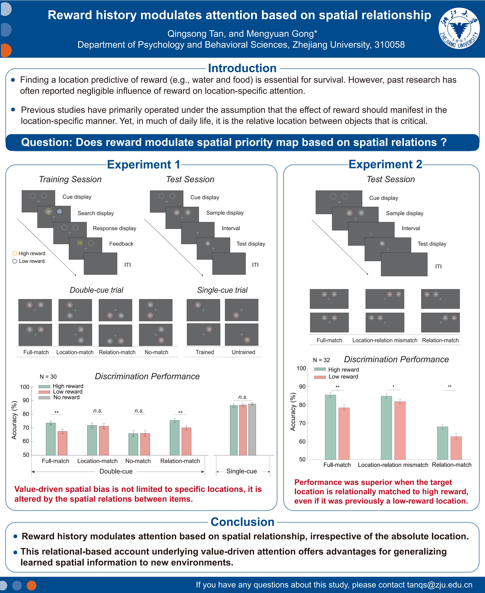

Learned social interaction history prioritizes face perception and attentional selection
Qingsong Tan, Ke Jia, Mengyuan Gong
[pdf]
Bournemouth International Centre, Bournemouth, UK
August 23–27, 2026

Learned social interaction history prioritizes face perception and attentional selection
Qingsong Tan, Ke Jia, Mengyuan Gong
[pdf]
Neural representations of relational-based attentional template in frontoparietal network
Xianming Dai, Mengyuan Gong*
[pdf]温州，中国
2026年8月1–2日

A shared code for generalization but dissociable specificity in experience-driven attention
Shuheng Ouyang, Qingsong Tan, Mengyuan Gong*
[pdf]
Associative learning of social interaction alters attention to human faces
Xiaodong Zhang, Qingsong Tan, Mengyuan Gong
[pdf]
中国神经科学学会第十五届全国学术会议
杭州, 2021
<1p>

全国心理学大会
线上, 2022
<1p>

中国心理学会普通心理和实验心理专业委员会学术年会
金华, 2023
<1p>

中国心理学会普通心理和实验心理专业委员会学术年会
兰州, 2024
<1p>

中国心理学会普通心理和实验心理专业委员会学术年会
成都, 2025
<1p>